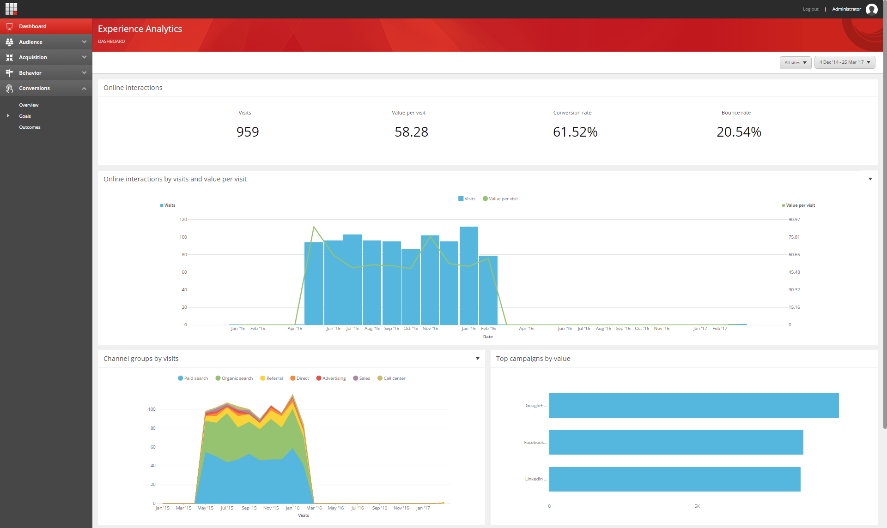

エクスペリエンス アナリティクス¶
Sitecore Experience Analyticsは、マーケティング担当者やマーケティングアナリスト向けに、ウェブサイトや潜在的に他の外部データソースから収集したエクスペリエンスデータのパターンや傾向を特定するための概要レポートと詳細レポートを提供しています。
エクスペリエンスアナリティクスのダッシュボード
{kind=link}
初めてエクスペリエンスアナリティクスを開くと、エクスペリエンスデータの概要を提供するダッシュボードページが表示されます。メニューパネルには、レポートのいくつかのカテゴリがあり、それぞれに異なるチャートやグラフが含まれています。
Experience Analyticsには、以下のカテゴリのレポートが含まれています。
ダッシュボード - 選択したチャートやパフォーマンス指標を表示して、主要な分析の概要を提供します。
オーディエンス - 訪問者が誰なのかを理解するのに役立ちます。
獲得 - 何がウェブサイトへのトラフィックを促進しているかを表示します。例えば、キャンペーンや他のマーケティングチャンネルからのものなどです。
行動 - 訪問者の行動を分析して、訪問者がコンテンツとどのように相互作用しているかを理解するのに役立ちます。
コンバージョン - 特定の目標を達成した訪問者の割合。これは、マーケティングの取り組みがどれだけ効果を上げているかを理解するのに役立ちます。
ページビュー、コンバージョン率、エンゲージメント値などのメトリクスを比較したり、日付範囲やウェブサイトごとにデータをフィルタリングすることができます。レポートを使用して、ウェブサイトのパフォーマンスや最適化、ウェブサイトの訪問者やコンタクトのコミットメントのレベルを分析することができます。
注釈
Sitecoreではマーケティング定義アイテムのサンプルを提供していますが、マーケティングプランやキャンペーンを開始する際には、マーケティング定義アイテムのタクソノミを独自に作成する必要があります。 定義アイテムを作成した後は、それらをデプロイし、データを解釈するためのカスタムレポートを作成する必要があります。
より高度なタスクを実行するために、開発者はVisual StudioとSitecore Rocksを使用して、新しいレポートの作成、編集、チャートやグラフの追加、高度なフィルタの作成を行うことができます。
重要
Experience Analyticsに付属している標準レポートを変更またはカスタマイズする場合は、既存のレポートをコピーし、カスタマイズしてから名前を変更することをお勧めします。 これは、将来のバージョンのSitecoreにアップデートしたときに、カスタマイズした内容が上書きされてしまうリスクがあるためです。